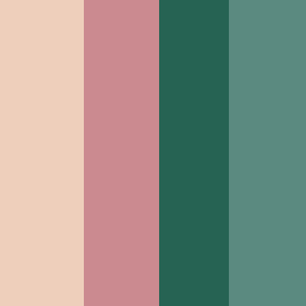

Decoration Styleguide
Color Palette
The theme: Rococo Memoires

Placards

Do
- Think minimalistic
- Use decorative embellishments
- Incorporate gold wire
- Include first names and last names
- Include the table number
Don't
Flowers and Bouqets
Do
- Choose colors within the style palette
- Include up to 25 flowers per
- Coordinate the bride and bridesmaids bouqets
- Use hydrangeas, peonies, and roses/garden roses (dyed appropriately)
- Use eucalyptus leaf, pittosporum, and Ruscus as the greenery
Don't
- Choose overly extravagant flowers
- Overdo the green accents
- Design the same bouqet for the bride and bridesmaids
- Use any flower species not mentioned previously
Decorative Embellishments
Do
- Use flowers
- Use filigree
- Incorporate lacey elements
- Inlay gold accents
- Use them on tablecloths
- Use them on chair coverings
Don't
- Use silver
- Overcrowd the design(s)
- Occupy a height greater than 2 inches